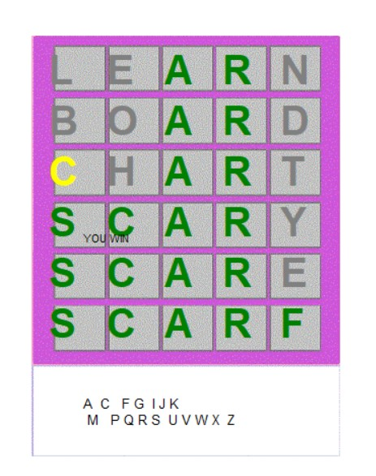
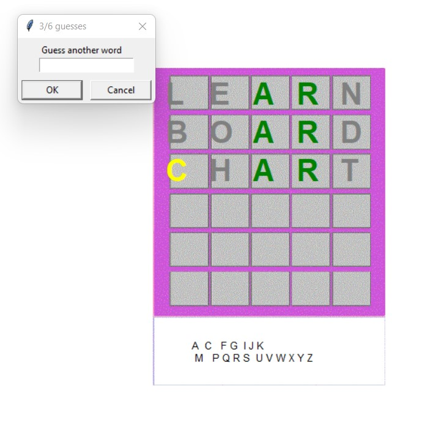
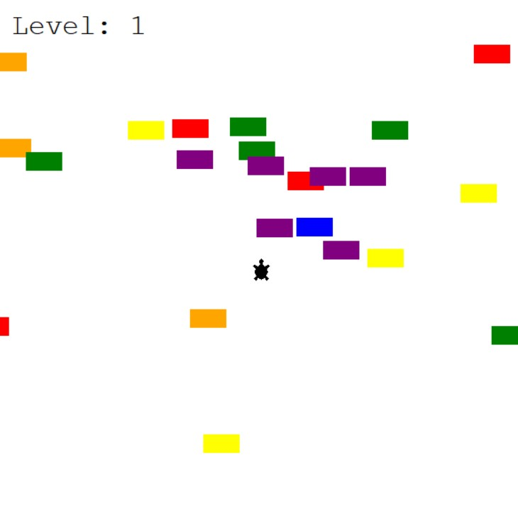
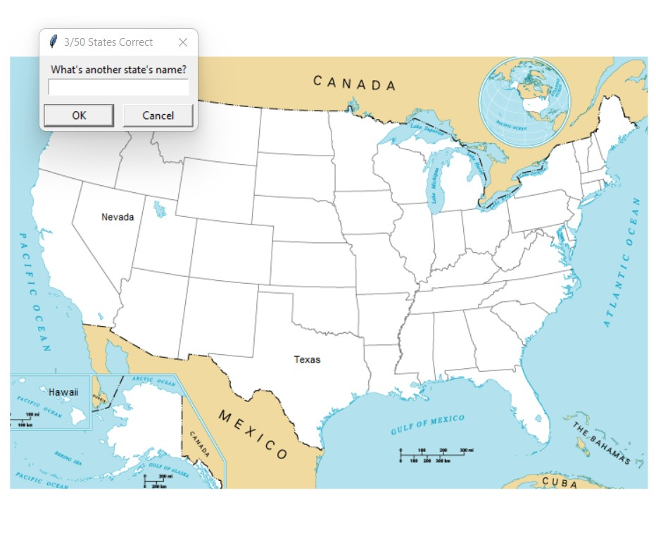
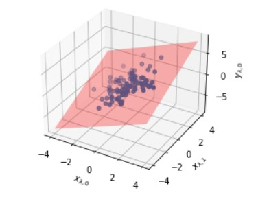
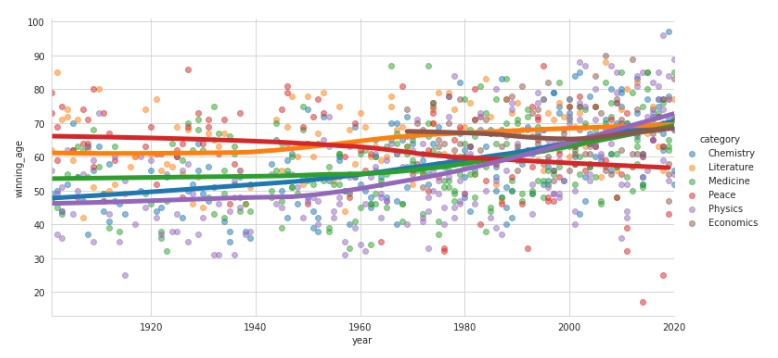
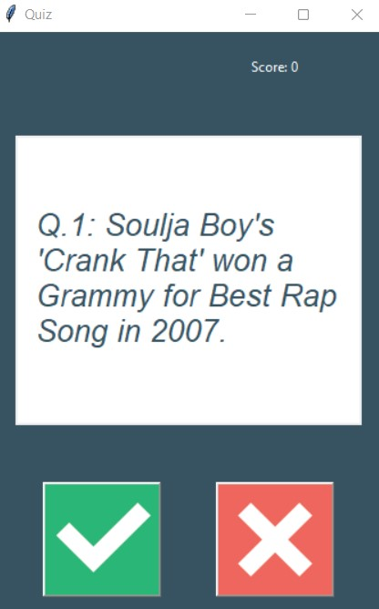

I'm Lauren.
I'm an enthusiastic and driven third year MEng student at the University of Bristol; a keen problem solver and lover of all things maths. View some of my projects I've been working on below as well as getting in touch by using my contact details found at the bottom of this page.

I programmed the Scotland Yard Board Game in a pair as part of my first year of University.
Scotland Yard Board Game


I programmed Wordle using Python.
Wordle
I performed data analysis on a test and training set.
Training and testing
I analysed the death rate of women giving birth in a Vienna Hospital and its correlation to handwashing.
Data analysis

I programmed Turtle Crossing using Python.
Turtle Crossing

I programmed the US states game using Python.
US states game

I performed multivariate linear regression using Python.
Multivariate linear regression

I analysed past Nobel Prize winners.
Data Analysis

I programmed a Quiz app using Python.
Quiz appGet In Touch
Contact me to discuss my projects or work opportunities
See below for my email, Linkedin and my GitHub page which contains a longer list of my projects I have been working on.
CONTACT ME